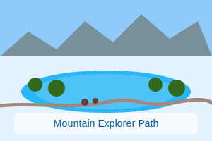
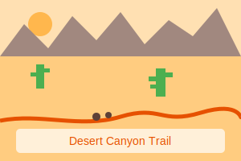

Explore Trails
Discover family-friendly hiking trails enhanced with interactive AI-generated stories and augmented reality experiences.
45+
Available Trails
28
Family-Friendly
120+
Narratives

Filter Trails
help
Choose a distance range that fits your family's walking ability
help
Easy trails are flat with even surfaces, moderate have some hills, and hard trails have steep sections
accessible
Trail Surface
stroller
Access Needs
12 trails match your filters
Nearby Trails

Popular
Woodland Wonder Trail
Easy
straighten
3.2 km
schedule
45 min
Kid-friendly
Wildlife viewing
Shaded
Discover a magical woodland path perfect for families with young children. Keep an eye out for local wildlife!
auto_stories
5 stories
view_in_ar
8 AR spots

New
Mountain Explorer Path
Moderate
straighten
5.1 km
schedule
1h 30m
Scenic views
Lake
Picnic area
Enjoy breathtaking mountain vistas and a serene lake perfect for a family picnic. Moderate elevation gain makes this suitable for older children.
auto_stories
7 stories
view_in_ar
5 AR spots

Desert Canyon Trail
Hard
straighten
7.8 km
schedule
3h 15m
Desert views
Rock formations
Historical site
An adventurous hike through dramatic canyon landscapes and unique rock formations. Best for families with teens and experienced hikers.
auto_stories
9 stories
view_in_ar
12 AR spots
Accessible
Lakeside Loop
Easy
straighten
2.5 km
schedule
30 min
Lake views
Wheelchair accessible
Stroller friendly
A gentle loop around a serene lake with plenty of opportunities to spot waterfowl. Perfect for all ages and accessibility needs.
auto_stories
6 stories
view_in_ar
10 AR spots